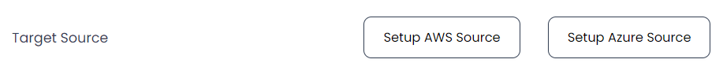
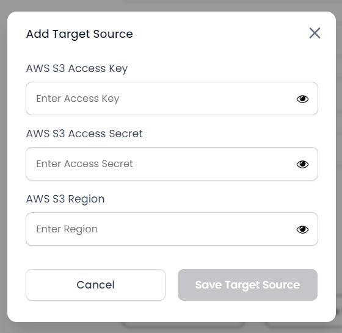
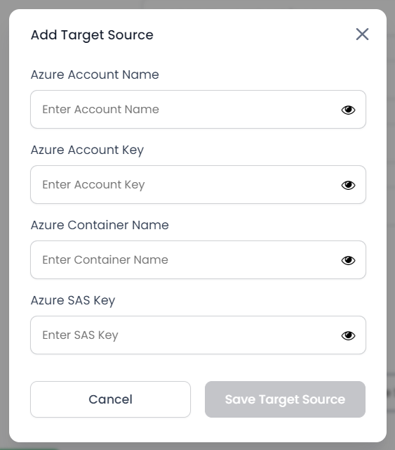
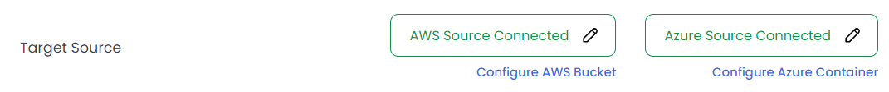
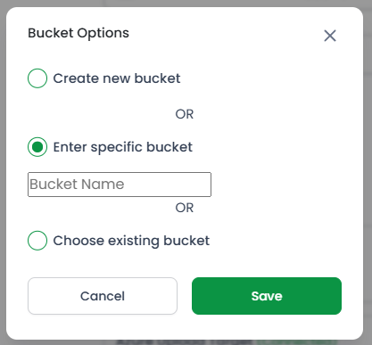
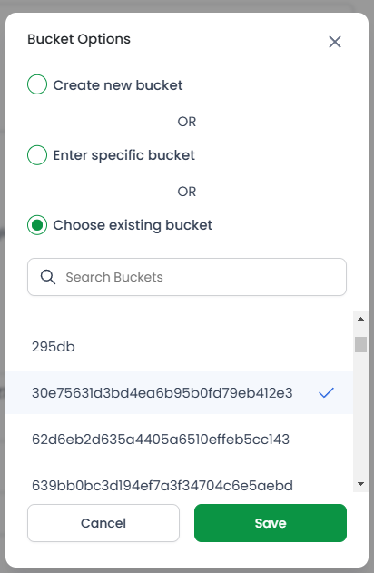
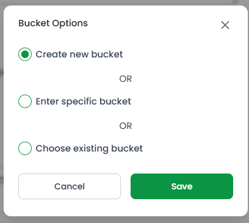

CCE Admin
Set up AWS Buckets and Azure Containers
Before you begin creating projects in CrossCopy Enterprise, it's essential to have an upload target configured, either an AWS Bucket or Azure Container. If you still need to set one up, please do so within the AWS or Azure platforms.
You'll need the following credentials to connect CrossCopy Enterprise to your upload target. This setup can be quickly completed by accessing your profile. Click on your avatar in the top right corner to navigate to your profile page, where you can configure and connect to your chosen upload target.

Click on the Setup button for any source of your choice. You will
be prompted to add details of the source.
|

Set up AWS Bucket
|

Set up Azure Container
|
Add all the required information and click on the
Save Target Source button to configure your resource. Now you
can configure your target sources for your projects by clicking on the
Configure AWS Bucket or
Configure Azure Container buttons.

Configure AWS Bucket
You will be prompted to either select an existing bucket or create a
new one:

If you select Choose existing bucket, you will see a list of
available options that you can choose from. Select any of your choices
and click on the Save button.

However, if you choose to create a new bucket, select that option and
click on the Save button.

A new bucket will be automatically created and selected for you.
Configure Azure Containers
You will be prompted to select a container from the list of available
containers. Select the one of your choice and click on the
Save button:
 Please note that even after setting up and configuring your source,
whenever you click on the edit button, you will see all the fields
empty. This does not indicate that your source is no longer available;
rather, the data is not shown to maintain security.
Please note that even after setting up and configuring your source,
whenever you click on the edit button, you will see all the fields
empty. This does not indicate that your source is no longer available;
rather, the data is not shown to maintain security.
After you have set up and configured your target sources, click on the Save Changes button on the
profile page.